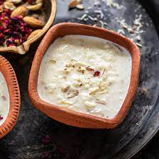

Kheer
This is something sweet for all the sweet people looking at my website.

Description
Kheer is a popular and traditional dessert in the Indian subcontinent. It is a creamy and rich rice pudding made by simmering rice, milk, sugar, and aromatic ingredients together until the mixture thickens. The rice is cooked until it becomes soft and tender, absorbing the flavors of the milk and spices. Kheer is often flavored with cardamom, saffron, and garnished with nuts such as almonds, pistachios, or cashews. It can be served warm or chilled and is enjoyed as a sweet treat on festive occasions or as a comforting dessert. Kheer offers a delightful combination of creamy texture, delicate flavors, and a hint of sweetness, making it a beloved dessert in many cultures.
Ingredients
- Rice: A small quantity of rice is used as the main ingredient for kheer. Basmati rice or any other short-grain rice variety works well.
- Milk: Whole milk is traditionally used to make kheer, providing the creamy base for the dessert.
- Sugar: Sweetness is added to the kheer with the use of sugar. The quantity can be adjusted to taste.
- Cardamom: Ground or whole cardamom pods are used to infuse the kheer with a pleasant aromatic flavor.
- Nuts: Almonds, pistachios, and/or cashews are commonly used as garnishes in kheer, adding a delightful crunch and enhancing the overall taste.
These five ingredients form the basic foundation of kheer, but additional flavorings and garnishes like saffron, rose water, or raisins can also be added according to personal preference.
Steps
- Rinse and soak the rice in water for about 30 minutes. Drain the water and set the rice aside.
- In a large saucepan or pot, bring milk to a boil. Once the milk comes to a boil, reduce the heat to low and let it simmer, stirring occasionally to prevent sticking and scorching.
- Add the soaked rice to the simmering milk and cook on low heat, stirring frequently to avoid lumps. Allow the rice to cook until it becomes soft and the milk thickens, which can take about 30-40 minutes.
- Stir in the sugar and cardamom powder or crushed cardamom pods, and continue to simmer for another 5-10 minutes, until the sugar dissolves and the flavors meld together.
- Remove the kheer from heat and let it cool for a while. It will thicken further as it cools. If desired, garnish the kheer with chopped or slivered nuts like almonds, pistachios, or cashews.
- Serve the kheer warm or chilled, according to your preference. Enjoy the creamy, sweet, and aromatic delight of homemade kheer!
Note: You can adjust the sweetness and thickness of the kheer by adding more or less sugar and milk, depending on your preference.